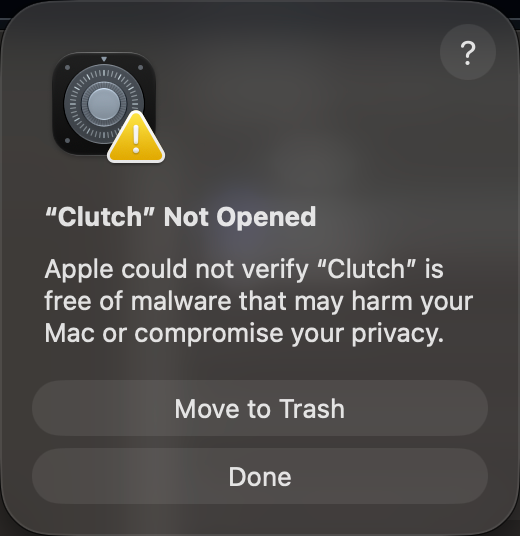
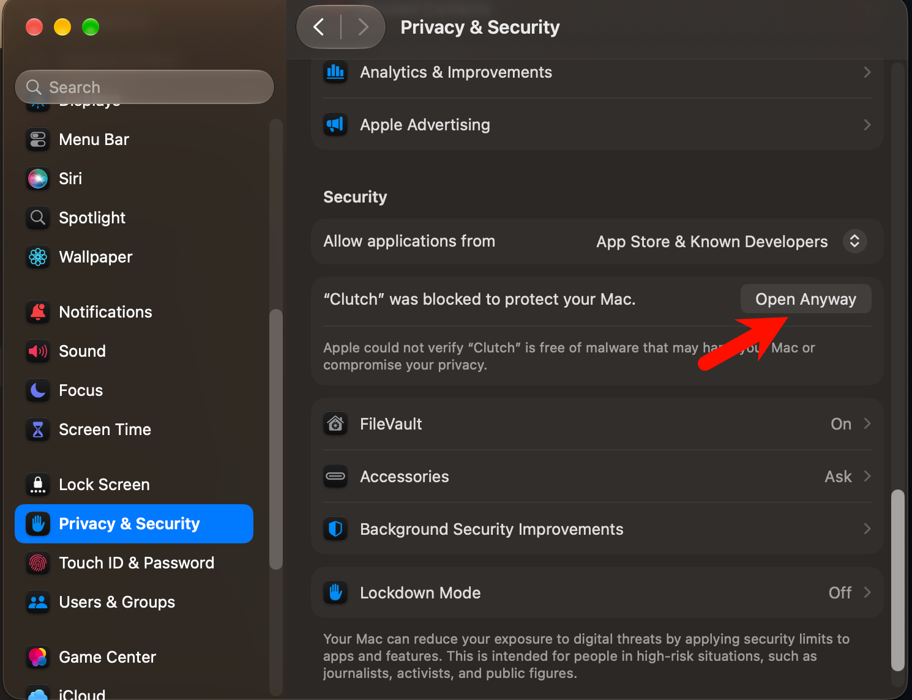

Clutch 安装与使用指南Clutch Installation & Quick Start
v1.0.0 · Universal · macOS 15+
系统要求：macOS 15 Sequoia 或更高版本，支持 Apple Silicon 和 Intel。
Requires macOS 15 Sequoia or later. Universal app for Apple Silicon and Intel.
-
1 · 拖动安装1 · Drag to install
打开下载的 DMG，将安装窗口中的 Clutch 拖到 Applications（应用程序）快捷入口。复制完成后，从“应用程序”文件夹打开 Clutch；随后可以推出安装磁盘。
Open the DMG and drag Clutch onto the Applications shortcut. After copying, launch Clutch from Applications. You can then eject the installer disk.
-
2 · 关闭首次拦截提示2 · Dismiss the first-launch alert
如果出现 “Clutch”未打开（Not Opened）提示，点击 “完成（Done）”关闭提示，保留应用。
If macOS shows “Clutch” Not Opened, click Done to dismiss the alert and keep the app.

-
3 · 允许打开3 · Allow Clutch to open
打开 “系统设置 → 隐私与安全性”，向下滚动到“安全性”，在关于 Clutch 的提示旁点击 “仍要打开（Open Anyway）”。
Open System Settings → Privacy & Security, scroll to Security, and click Open Anyway beside the message about Clutch.

按系统提示确认打开；如有要求，输入 Mac 登录密码或使用触控 ID。
Confirm that you want to open Clutch. Enter your Mac password or use Touch ID if prompted.
-
4 · 开启辅助功能权限4 · Enable Accessibility
在 Clutch 中点击 “打开系统设置”，前往 “隐私与安全性 → 辅助功能”，开启 Clutch 的权限。Clutch 会自动识别授权变化。
In Clutch, click Open System Settings and enable Clutch under Privacy & Security → Accessibility. Clutch detects the change automatically.
-
5 · 添加快捷键5 · Add a shortcut
打开 Clutch 主窗口，在录制区域按住一个修饰键（⌃ Control、⌥ Option、⌘ Command、⇧ Shift 或 fn），再按鼠标按键或滚动滚轮，最后选择要触发的系统动作。保存后，使用相同的“修饰键＋鼠标操作”组合即可触发。
In Clutch's main window, hold a modifier key (⌃ Control, ⌥ Option, ⌘ Command, ⇧ Shift, or fn) in the recorder, press a mouse button or scroll, then choose a system action. Use the saved modifier and mouse combination to trigger it.
切换桌面需要开启“系统设置 → 键盘 → 键盘快捷键 → 调度中心”中的“向左移动一个空间”和“向右移动一个空间”。关闭 Clutch 窗口后，应用仍会在菜单栏运行，可从菜单栏重新打开。
For desktop switching, keep “Move left a space” and “Move right a space” enabled in System Settings → Keyboard → Keyboard Shortcuts → Mission Control. Clutch keeps running in the menu bar when you close its window; use the menu bar icon to reopen it.